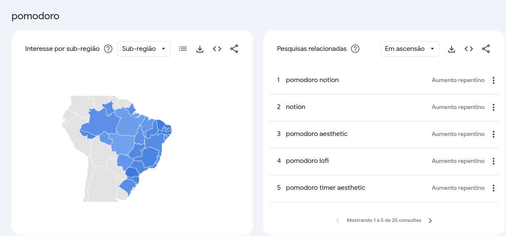
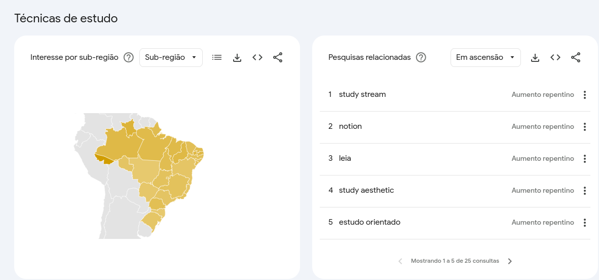
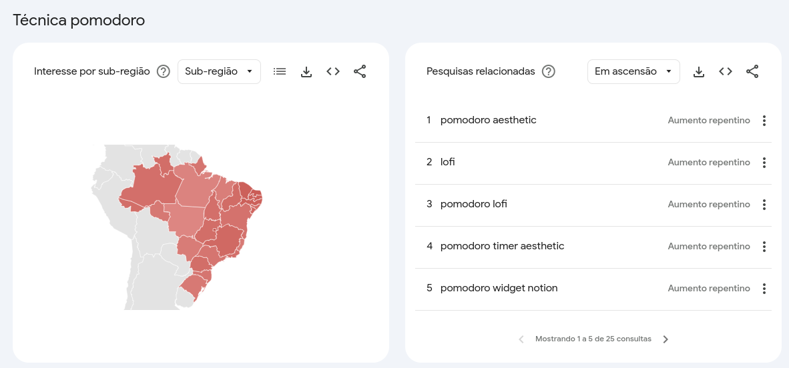
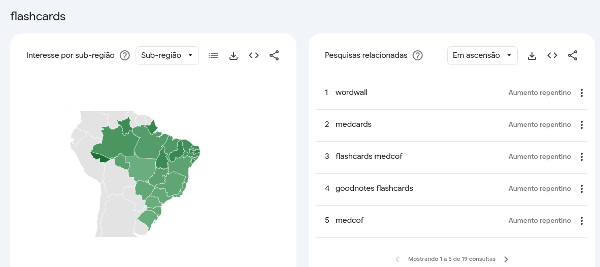

Este projeto visa desenvolver um aplicativo voltado para o meio acadêmico, combinando as estratégias de estudo Pomodoro e Flashcards em uma única plataforma. O objetivo é criar uma solução completa que permita aos usuários gerenciar seu tempo de estudo de forma eficiente e organizar seus materiais de aprendizado de maneira efetiva.
Uma das principais funcionalidades do aplicativo será a integração da técnica Pomodoro. Essa técnica de gerenciamento de tempo ajudará os usuários a manterem sua concentração e produtividade durante os momentos de estudo. Além disso, o aplicativo contará com ferramentas de criação e edição de flashcards, uma estratégia amplamente utilizada por estudantes para memorização e revisão de conteúdo.
Outra funcionalidade chave será o mercado interno, onde os usuários poderão negociar seus flashcards usando uma moeda própria da plataforma. Essa integração de um ambiente de compra e venda de material de estudo criará um ecossistema dinâmico de aprendizado, incentivando a troca de conhecimento e a colaboração entre os usuários.
Ao combinar estratégias de estudo comprovadas, gerenciamento de tempo e um mercado interno, o aplicativo se posicionará como uma solução inovadora e completa para as necessidades do meio acadêmico. Espera-se que essa integração de ferramentas melhore o desempenho e o engajamento dos estudantes, além de fomentar a colaboração e o compartilhamento de conhecimento entre os usuários.
O desenvolvimento deste aplicativo visa atender às demandas do público acadêmico, oferecendo uma plataforma que integre eficientemente as principais estratégias de estudo e aprendizado.
Objetivo Geral
O objetivo geral deste projeto é desenvolver um aplicativo que combine as estratégias de estudo Pomodoro e Flashcards, oferecendo aos usuários do meio acadêmico uma plataforma integrada e eficiente para gerenciar seu tempo de estudo e organizar seus materiais de aprendizado.
Objetivos Específicos
Implementar a funcionalidade de Pomodoro: integrar a técnica Pomodoro no aplicativo, permitindo que os usuários gerenciem seu tempo de estudo de forma eficiente, alternando períodos de trabalho intenso e breves intervalos.
Desenvolver ferramentas de criação e edição de Flashcards: criar uma interface intuitiva para que os usuários possam criar, armazenar, editar e organizar seus flashcards de forma eficaz.
Estabelecer um Mercado Interno de Flashcards: implementar um sistema de compra e venda de flashcards entre os usuários, utilizando uma moeda própria da aplicação, a fim de fomentar a troca de conhecimento e a colaboração na comunidade acadêmica.
Integrar as funcionalidades de Pomodoro e Flashcards: garantir uma experiência fluida e integrada entre as estratégias de estudo Pomodoro e o uso de Flashcards, otimizando o fluxo de aprendizado dos usuários.
Desenvolver uma Interface Intuitiva e Acessível: criar uma interface de usuário intuitiva, responsiva e acessível, de modo a facilitar a adoção e a usabilidade do aplicativo por parte do público-alvo.
Promover a Colaboração e Compartilhamento de Conhecimento: Através do Mercado Interno de Flashcards, incentivar a colaboração e o compartilhamento de conhecimento entre os usuários do aplicativo, fomentando o aprendizado mútuo.
Mercado
Análise de Mercado
Público Alvo
O aplicativo tem como público-alvo estudantes de ensino médio ao nível universitário, abrangendo:
Perfil
Descrição
Estudantes do Ensino Médio
Alunos que buscam ferramentas para melhorar sua organização e produtividade nos estudos, preparando-se para o ambiente universitário.
Estudantes Universitários
Alunos de graduação e pós-graduação que precisam gerenciar seu tempo de estudo e organizar seu material de aprendizado de forma eficiente.
Estudantes Autônomos
Indivíduos que estudam de forma independente, como preparatórios para concursos ou cursos livres, e necessitam de estratégias de estudo eficazes.
Esse público-alvo foi selecionado com base na necessidade de ferramentas que combinem eficientemente a gestão do tempo de estudo (técnica Pomodoro) e a organização de conteúdo (flashcards), além da oportunidade de compartilhar e trocar conhecimento por meio do mercado interno de flashcards, atendendo às demandas dos estudantes desde o ensino médio até o nível universitário.
Análise da Concorrência
Ao analisar o mercado, foram identificados alguns aplicativos e plataformas que oferecem funcionalidades semelhantes ao aplicativo proposto, embora de forma fragmentada. Alguns dos principais concorrentes são:
Concorrente
Funcionalidades
PontosFortes
PontosFracos
Anki
- Criação e revisão de flashcards
- Gerenciamento de deck de flashcards
- Ampla base de usuários
- Algoritmo de repetição espaçada eficiente
- Não possui integração com a técnica Pomodoro
- Interface pouco intuitiva
Forest
- Técnica Pomodoro
- Gerenciamento de tempo de estudo
- Interface amigável
- Gamificação da técnica Pomodoro
- Não possui funcionalidades de flashcards
- Apenas gerenciamento de tempo, sem organização de conteúdo
Quizlet
- Criação e revisão de flashcards
- Compartilhamento de flashcards
- Ampla biblioteca de flashcards compartilhados
- Ferramentas de aprendizado interativas
- Não possui integração com a técnica Pomodoro
- Foco apenas na funcionalidade de flashcards, sem gerenciamento de tempo
Essa análise da concorrência permite identificar as principais lacunas no mercado, as quais o aplicativo proposto pode preencher ao combinar as funcionalidades de gerenciamento de tempo (Pomodoro) e organização de conteúdo (flashcards), além de oferecer um mercado interno de flashcards para a troca de conhecimento entre os usuários.
Tendências:
Crescente demanda por ferramentas de gerenciamento de tempo e organização de estudo: Estudantes e profissionais do meio acadêmico buscam cada vez mais soluções integradas que os ajudem a gerenciar seu tempo de estudo e aprendizado de forma eficiente.
Adoção da técnica Pomodoro no ambiente acadêmico: A técnica Pomodoro vem ganhando popularidade entre estudantes e pesquisadores, que a utilizam para aumentar sua produtividade durante os momentos de estudo e trabalho.
Necessidade de compartilhamento e colaboração no aprendizado: Existe uma demanda crescente por plataformas que permitam a troca de conhecimento e a colaboração entre estudantes e profissionais do meio acadêmico.
Usando alguns termos para pesquisa no Google Trends vemos que há uma busca ativa sobre os termos chaves como: pomodoro, flashcards, etc
Gráficos por termos:
Pomodoro 
Técnica Estudo 
Técnica Pomodoro 
Flashcards 
Oportunidades:
Integração de ferramentas de gerenciamento de tempo e organização de conteúdo: O mercado carece de soluções que combinem de forma eficiente e fluida a técnica Pomodoro e a utilização de flashcards, atendendo às necessidades dos estudantes.
Criação de um ecossistema de compartilhamento de conhecimento: O desenvolvimento de um mercado interno de flashcards, onde os usuários possam comprar, vender e trocar materiais de estudo, representa uma oportunidade significativa para fomentar a colaboração e a troca de conhecimento no meio acadêmico.
Diferenciação por meio da integração de funcionalidades: A maioria das soluções atuais se concentra em apenas uma das necessidades (gerenciamento de tempo ou organização de flashcards), deixando uma lacuna a ser preenchida por um aplicativo que integre essas funcionalidades de forma completa.
Essas tendências e oportunidades de mercado indicam que o aplicativo proposto pode preencher uma demanda relevante do público-alvo, oferecendo uma solução integrada e inovadora para o gerenciamento do tempo de estudo e a organização do conteúdo de aprendizado, além de promover a colaboração e a troca de conhecimento entre os usuários.
Posicionamento e Diferencial Competitivo
Com base na análise do mercado e das necessidades do público-alvo, o aplicativo proposto se posicionará como uma solução integrada e inovadora, com os seguintes diferenciais competitivos:
Combinação de Pomodoro e Flashcards: O aplicativo será a única solução do mercado que combina de forma fluida e eficiente a técnica Pomodoro para gerenciamento do tempo de estudo e as funcionalidades de criação, organização e revisão de flashcards. Essa integração permitirá que os usuários otimizem seu processo de aprendizado.
Mercado Interno de Flashcards: A implementação de um mercado interno, onde os usuários poderão comprar, vender e trocar flashcards usando uma moeda própria da plataforma, será um diferencial competitivo. Essa funcionalidade fomentará a colaboração e a troca de conhecimento entre os estudantes e profissionais do meio acadêmico.
Foco no Público Acadêmico: Ao concentrar-se especificamente nas necessidades dos estudantes do ensino médio, universitários e profissionais do meio acadêmico, o aplicativo se diferenciará de soluções genéricas de gerenciamento de tempo e flashcards, oferecendo uma experiência personalizada e adaptada às demandas desse público-alvo.
Interface Intuitiva e Acessível: O aplicativo priorizará o desenvolvimento de uma interface de usuário intuitiva, responsiva e acessível, facilitando a adoção e a usabilidade por parte dos estudantes e profissionais do meio acadêmico, independentemente de seu nível de familiaridade com esse tipo de ferramenta.
Esse posicionamento estratégico, aliado aos diferenciais competitivos do aplicativo, permitirá que o produto se destaque no mercado e se torne uma solução de referência para o gerenciamento eficiente do tempo de estudo e a organização do conteúdo de aprendizado no meio acadêmico.